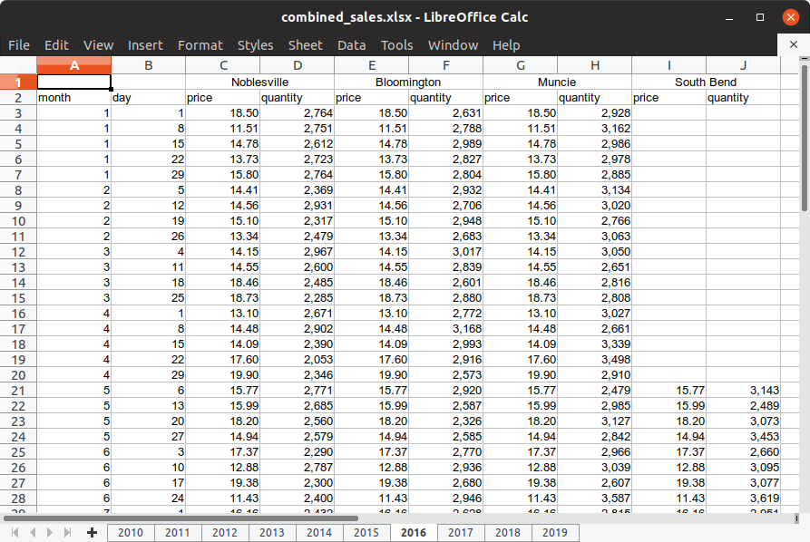
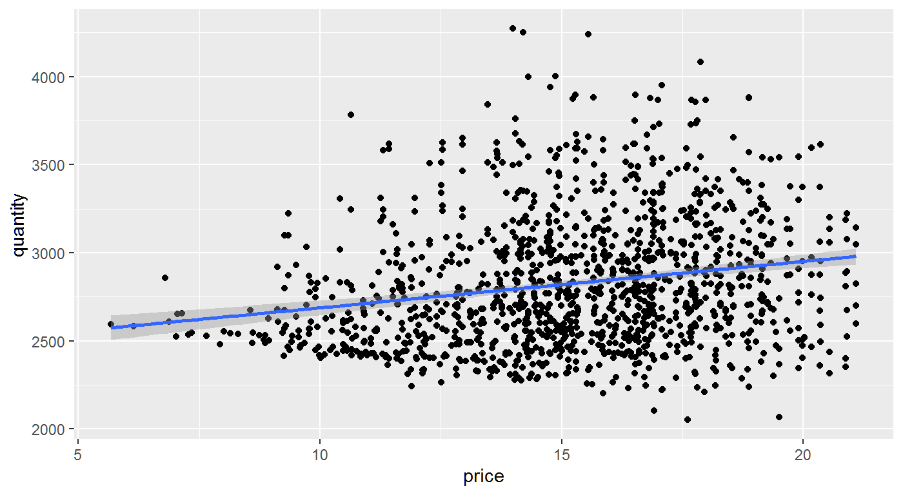
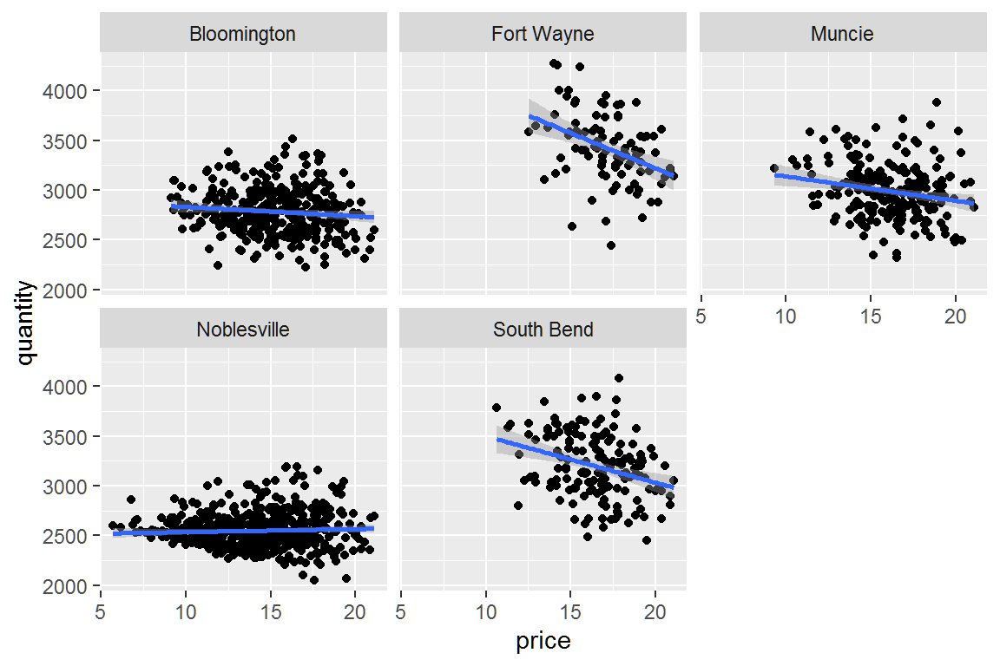
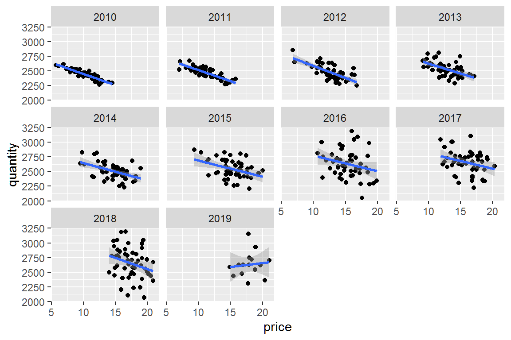

untidy-spreadsheet-example.RmdThis vignette is about working with an untidy spreadsheet of simulated sales data for a fictitious company with multiple locations in Indiana. The document presents several challenges we often encounter with real spreadsheets, including:
The document contains 10 sheets (tabs), so coding them one-by-one isn’t very appealing. We’ll want to automate processing the sheets.
Before we create an automated solution, let’s start by manually processing a representative sheet so we can figure out what we need to automate.
Open the document in your favorite spreadsheet software and you’ll see that the first few sheets contain data for just one location, Noblesville. Later sheets contain data for more than one location. Sheet 7 (for 2016) looks like a good one to work with because it has data for multiple locations.
Notice that the location names are in cells that have been merged and centered, and there are price and quantity columns for each of the locations. Also notice that data for the last location, South Bend, is missing for the first several rows.

Let’s start by loading the tidyverse and readxl packages and setting file_name to the path to the spreadsheet. Since the spreadsheet is part of the untidydata2 package, we use system.file to return a path to the spreadsheet.
## -- Attaching packages ---------------------------------- tidyverse 1.2.1 --## v ggplot2 3.2.1 v purrr 0.3.2
## v tibble 2.1.3 v dplyr 0.8.3
## v tidyr 0.8.3 v stringr 1.4.0
## v readr 1.3.1 v forcats 0.4.0## -- Conflicts ------------------------------------- tidyverse_conflicts() --
## x dplyr::filter() masks stats::filter()
## x dplyr::lag() masks stats::lag()First, let’s get a list of locations contained in sheet for 2016 using readxl::read_excel. We can read just the first row by setting n_max = 0 and then passing the result to names.
## [1] "Noblesville" "...2" "Bloomington" "...4" "Muncie"
## [6] "...6" "South Bend"The merged cells are coming back with names of “…2”, “…4”, etc. We can remove them from the list with stringr::str_subset and a regular expressing that matches “…” at the beginning of a string.
locations <- read_excel(file_name, sheet = "2016", n_max = 0) %>%
names() %>%
str_subset("^\\.{3}", negate = TRUE)
locations## [1] "Noblesville" "Bloomington" "Muncie" "South Bend"Now we have a character vector of locations for the 2016 sheet. Let’s read the rest of the data from the 2016 sheet, skipping the first row this time.
## # A tibble: 53 x 10
## month day price...3 quantity...4 price...5 quantity...6 price...7
## <dbl> <dbl> <dbl> <dbl> <dbl> <dbl> <dbl>
## 1 1 1 18.5 2764. 18.5 2631. 18.5
## 2 1 8 11.5 2751. 11.5 2788. 11.5
## 3 1 15 14.8 2612. 14.8 2989. 14.8
## 4 1 22 13.7 2723. 13.7 2827. 13.7
## 5 1 29 15.8 2764. 15.8 2804. 15.8
## 6 2 5 14.4 2369. 14.4 2932. 14.4
## 7 2 12 14.6 2931. 14.6 2706. 14.6
## 8 2 19 15.1 2317. 15.1 2948. 15.1
## 9 2 26 13.3 2479. 13.3 2683. 13.3
## 10 3 4 14.1 2967. 14.1 3017. 14.1
## # ... with 43 more rows, and 3 more variables: quantity...8 <dbl>,
## # price...9 <dbl>, quantity...10 <dbl>We’re making progress but we need to do something to associate the price... and quantity... variables with their correct locations. Later we will want to have a separate variable for location, but for now let’s rename our price and quantity variables to price_Noblesville, quantity_Noblesville, price_Bloomington, quantity_Bloomington, etc.
Notice that price...3 and quantity...4 correspond to the first location, price...5 and quantity...6 correspond to the second location, etc. Let’s write a function to give us the corresponding location index for each value 3, 4, 5, 6, etc.
Now let’s verify that this works.
## [1] 1 1 2 2 3 3 4 4Yes it does.
Now we can write a function to calculate a new name for each column we want to rename.
new_name <- function(columns) {
num <- as.integer(str_extract(columns, "\\d+"))
location <- locations[loc_index(num)]
str_replace(columns, paste0("...", num), paste0("_", location))
}And let’s verify that this works.
## [1] "price_Noblesville" "quantity_Noblesville" "price_Bloomington"
## [4] "quantity_Bloomington"Okay. Now we’re ready to read the spreadsheet and rename the columns.
data_2016 <- read_excel(file_name, sheet = "2016", skip = 1) %>%
rename_at(vars(contains("...")), new_name)
data_2016## # A tibble: 53 x 10
## month day price_Noblesvil~ quantity_Nobles~ price_Bloomingt~
## <dbl> <dbl> <dbl> <dbl> <dbl>
## 1 1 1 18.5 2764. 18.5
## 2 1 8 11.5 2751. 11.5
## 3 1 15 14.8 2612. 14.8
## 4 1 22 13.7 2723. 13.7
## 5 1 29 15.8 2764. 15.8
## 6 2 5 14.4 2369. 14.4
## 7 2 12 14.6 2931. 14.6
## 8 2 19 15.1 2317. 15.1
## 9 2 26 13.3 2479. 13.3
## 10 3 4 14.1 2967. 14.1
## # ... with 43 more rows, and 5 more variables: quantity_Bloomington <dbl>,
## # price_Muncie <dbl>, quantity_Muncie <dbl>, `price_South Bend` <dbl>,
## # `quantity_South Bend` <dbl>Finally, let’s extract location, price, and quantity variables. This is the trickiest part of tidying this data because it involves gathering multiple variables and then spreading them again. We also add the year and order the variables.
data_2016 %>%
gather(-month, -day, key = "label", value = "value") %>%
separate(label, into = c("type", "location"), sep = "_") %>%
spread(key = "type", value = "value") %>%
filter(!is.na(price) | !is.na(quantity)) %>%
mutate(year = 2016) %>%
select(year, month, day, location, price, quantity)## # A tibble: 194 x 6
## year month day location price quantity
## <dbl> <dbl> <dbl> <chr> <dbl> <dbl>
## 1 2016 1 1 Bloomington 18.5 2631.
## 2 2016 1 1 Muncie 18.5 2928.
## 3 2016 1 1 Noblesville 18.5 2764.
## 4 2016 1 8 Bloomington 11.5 2788.
## 5 2016 1 8 Muncie 11.5 3162.
## 6 2016 1 8 Noblesville 11.5 2751.
## 7 2016 1 15 Bloomington 14.8 2989.
## 8 2016 1 15 Muncie 14.8 2986.
## 9 2016 1 15 Noblesville 14.8 2612.
## 10 2016 1 22 Bloomington 13.7 2827.
## # ... with 184 more rowsWhoa, there is a lot going on there! Let’s do that again and look at the intermediate results.
First we gather the location/price/quantity columns into label and value variables.
## # A tibble: 6 x 4
## month day label value
## <dbl> <dbl> <chr> <dbl>
## 1 1 1 price_Noblesville 18.5
## 2 1 8 price_Noblesville 11.5
## 3 1 15 price_Noblesville 14.8
## 4 1 22 price_Noblesville 13.7
## 5 1 29 price_Noblesville 15.8
## 6 2 5 price_Noblesville 14.4## # A tibble: 6 x 4
## month day label value
## <dbl> <dbl> <chr> <dbl>
## 1 11 25 quantity_South Bend 3038.
## 2 12 2 quantity_South Bend 3188.
## 3 12 9 quantity_South Bend 3265.
## 4 12 16 quantity_South Bend 3487.
## 5 12 23 quantity_South Bend 2849.
## 6 12 30 quantity_South Bend 3050.Then we can separate location into its own variable, while maintaining a type variable to distinguish price and quantity.
## # A tibble: 6 x 5
## month day type location value
## <dbl> <dbl> <chr> <chr> <dbl>
## 1 1 1 price Noblesville 18.5
## 2 1 8 price Noblesville 11.5
## 3 1 15 price Noblesville 14.8
## 4 1 22 price Noblesville 13.7
## 5 1 29 price Noblesville 15.8
## 6 2 5 price Noblesville 14.4## # A tibble: 6 x 5
## month day type location value
## <dbl> <dbl> <chr> <chr> <dbl>
## 1 11 25 quantity South Bend 3038.
## 2 12 2 quantity South Bend 3188.
## 3 12 9 quantity South Bend 3265.
## 4 12 16 quantity South Bend 3487.
## 5 12 23 quantity South Bend 2849.
## 6 12 30 quantity South Bend 3050.Now we can move price and quantity into their own variables using tidyr::spread.
## # A tibble: 212 x 5
## month day location price quantity
## <dbl> <dbl> <chr> <dbl> <dbl>
## 1 1 1 Bloomington 18.5 2631.
## 2 1 1 Muncie 18.5 2928.
## 3 1 1 Noblesville 18.5 2764.
## 4 1 1 South Bend NA NA
## 5 1 8 Bloomington 11.5 2788.
## 6 1 8 Muncie 11.5 3162.
## 7 1 8 Noblesville 11.5 2751.
## 8 1 8 South Bend NA NA
## 9 1 15 Bloomington 14.8 2989.
## 10 1 15 Muncie 14.8 2986.
## # ... with 202 more rowsFinally, we filter out NA values, add the year, and reorder the variables.
step3 %>%
filter(!is.na(price) | !is.na(quantity)) %>%
mutate(year = 2016) %>%
select(year, month, day, location, price, quantity)## # A tibble: 194 x 6
## year month day location price quantity
## <dbl> <dbl> <dbl> <chr> <dbl> <dbl>
## 1 2016 1 1 Bloomington 18.5 2631.
## 2 2016 1 1 Muncie 18.5 2928.
## 3 2016 1 1 Noblesville 18.5 2764.
## 4 2016 1 8 Bloomington 11.5 2788.
## 5 2016 1 8 Muncie 11.5 3162.
## 6 2016 1 8 Noblesville 11.5 2751.
## 7 2016 1 15 Bloomington 14.8 2989.
## 8 2016 1 15 Muncie 14.8 2986.
## 9 2016 1 15 Noblesville 14.8 2612.
## 10 2016 1 22 Bloomington 13.7 2827.
## # ... with 184 more rowsThis looks good, but it’s just one sheet. Now let’s write some code to process the whole spreadsheet document.
Here is a function that combines everything we’ve done above to read any specified sheet from the document. It also handles the simpler special case when a sheet contains only a single location.
read_sheet <- function(file_name, sheet) {
locations <- read_excel(file_name, sheet = sheet, n_max = 0) %>%
names() %>%
str_subset("^\\.{3}", negate = TRUE)
df <- read_excel(file_name, sheet = sheet, skip = 1)
if (length(locations) == 1) {
df <- df %>%
mutate(location = locations[1])
} else {
loc_index <- function(n) {
floor((n-1)/2)
}
new_name <- function(columns) {
num <- as.integer(str_extract(columns, "\\d+"))
location <- locations[loc_index(num)]
str_replace(columns, paste0("...", num), paste0("_", location))
}
df <- df %>%
rename_at(vars(contains("...")), new_name) %>%
gather(-month, -day, key = "label", value = "value") %>%
separate(label, into = c("type", "location"), sep = "_") %>%
spread(key = "type", value = "value")
}
df <- df %>%
filter(!is.na(price) | !is.na(quantity)) %>%
mutate(year = as.integer(sheet)) %>%
select(year, month, day, location, price, quantity)
df
}
read_sheet(file_name, "2016")## # A tibble: 194 x 6
## year month day location price quantity
## <int> <dbl> <dbl> <chr> <dbl> <dbl>
## 1 2016 1 1 Bloomington 18.5 2631.
## 2 2016 1 1 Muncie 18.5 2928.
## 3 2016 1 1 Noblesville 18.5 2764.
## 4 2016 1 8 Bloomington 11.5 2788.
## 5 2016 1 8 Muncie 11.5 3162.
## 6 2016 1 8 Noblesville 11.5 2751.
## 7 2016 1 15 Bloomington 14.8 2989.
## 8 2016 1 15 Muncie 14.8 2986.
## 9 2016 1 15 Noblesville 14.8 2612.
## 10 2016 1 22 Bloomington 13.7 2827.
## # ... with 184 more rowsThe hard part is done. Now let’s read and combine all the sheets.
Start with a vector of sheet names for the spreadsheet document.
## [1] "2010" "2011" "2012" "2013" "2014" "2015" "2016" "2017" "2018" "2019"Now we use purrr::map_dfr to read a data frame for each sheet and combine them into a single data frame.
## # A tibble: 6 x 6
## year month day location price quantity
## <int> <dbl> <dbl> <chr> <dbl> <dbl>
## 1 2010 1 1 Noblesville 7.65 2530.
## 2 2010 1 8 Noblesville 12.8 2342.
## 3 2010 1 15 Noblesville 10.0 2403.
## 4 2010 1 22 Noblesville 12.5 2265.
## 5 2010 1 29 Noblesville 11.8 2312.
## 6 2010 2 5 Noblesville 6.15 2583.## # A tibble: 6 x 6
## year month day location price quantity
## <int> <dbl> <dbl> <chr> <dbl> <dbl>
## 1 2019 4 5 South Bend 18.9 3572.
## 2 2019 4 12 Bloomington 20.3 2874.
## 3 2019 4 12 Fort Wayne 20.3 3062.
## 4 2019 4 12 Muncie 20.3 3371.
## 5 2019 4 12 Noblesville 20.3 2361.
## 6 2019 4 12 South Bend 20.3 2670.At least the last step was easy!
We now have a tidy data frame containing all of the data from the spreadsheet.
The main point of this vignette is to show how to tidy data an untidy spreadsheet. But let’s take just a few more minutes to look at the data.
First, let’s plot price and quantity.

Based on this plot, it appears higher prices are associated with greater quantities sold. Should management consider raising prices? Based on this plot, it doesn’t look like higher prices would cause reduced sales.
However, if we look at individual locations, we see something quite different.
combined_df %>%
ggplot(aes(price, quantity)) +
geom_point() +
geom_smooth(method = "lm") +
facet_wrap(~ location)
When locations are considered separately, higher prices are associated with lower quantities sold, as we would normally expect. The only exception appears to be Noblesville. Noblesville is this fictitious company’s oldest location. We have data for Noblesville from 2010 to the present.
Let’s look at Noblesville by year.
combined_df %>%
filter(location == "Noblesville") %>%
ggplot(aes(price, quantity)) +
geom_point() +
geom_smooth(method = "lm") +
facet_wrap(~ year)
So higher prices are associated with lower quantities even for Noblesville if we look at shorter time periods like a year.
This phenomenon where an association appears to exist in data as a whole, but disappears or even reverses when groups are analyzed separately, is known as Simpson’s Paradox. You can read more about at the link.